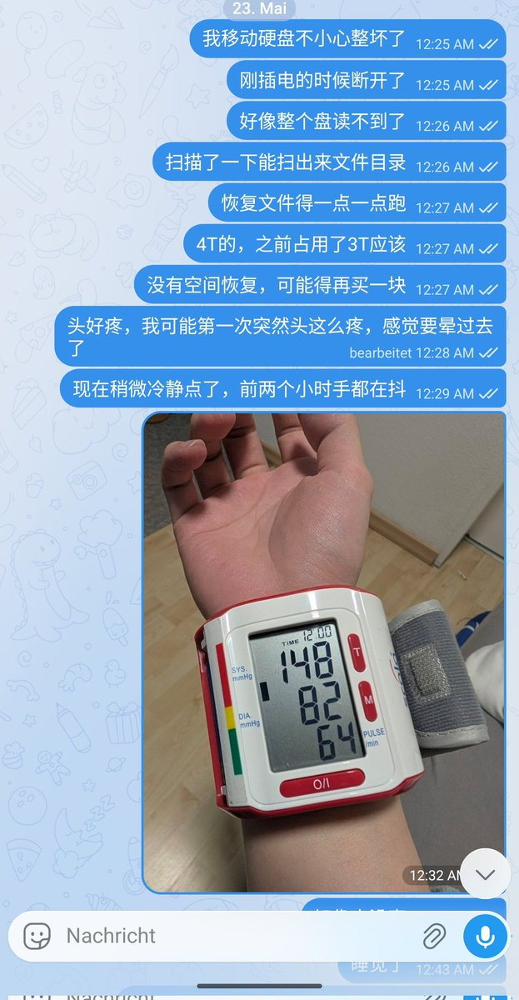

ジャンボ蜜柑
@JanboMikan
@mario_2333 摸摸🥺
就当是吃个大教训了，希望以后永远不会丢文件🥺

🍭Mario🐈
@mario_2333
如图，300多G是非常重要的做了二次备份没关系；接近1T是不能从网上获取到的和因为年代久远几乎不可能再找到的；2T多一点是可以下载的，只是需要精力找。坏消息是今天扫完了能恢复的文件不多
昨天也就睡了5个小时，精神状态没啥感觉的从心理学的角度应该叫现实解离了，今天也是努力维持人形的一天呢（ https://t.co/UHcRBGYovS